元多项式 5，那么这个列表有 行，因为 个未知量不可能构造出
元多项式 5，那么这个列表有 行，因为 个未知量不可能构造出 从 16 世纪末到 18 世纪初，尽管不列颠群岛经历了内战（1642~1651 年）、军事独裁（1651~1660 年）、光荣革命（1688 年）以及两个朝代的更迭（1603 年，斯图亚特王朝推翻都铎王朝；1714 年，汉诺威王朝推翻斯图亚特王朝），但这里仍然出现了一些优秀的数学家。
我之前提到过哈里奥特，他的精巧的字母符号体系在很大程度上被忽视了（也许笛卡儿曾关注过）。苏格兰人约翰·纳皮尔（1550—1617）虽然作为代数学家不出名，但他发现了对数并于 1614 年将其公布于世，还普及了小数点。威廉·奥特雷德（1574—1660）是英国的一位乡村牧师，他写了一部关于代数和三角学的著作，并发明了乘号“×”。约翰·沃利斯（1616—1703）是第一个使用笛卡儿的解析几何技术和符号的人（他是早已不在人世的哈里奥特的拥护者，他坚持认为笛卡儿从哈里奥特那里知道了这些记号）。
然而，所有这些人物都不过是牛顿出场的前奏。这位杰出的天才被公认为科学史上最伟大的人物。他出生于 1642 年的圣诞节 1，是英国林肯郡一个比较富裕的农场主的遗腹子。介绍他的人生经历和性格特点的作品已经很多了。下面是我自己以前写过的一段话。
1牛顿的出生日期是旧历日期，1752 年旧历已被废除。如果按照我们今天使用的历法，他的出生日期是 1643 年 1 月 4 日。这就是他的出生日期有两个版本的原因。
牛顿的人生故事并不吸引人。他从未离开过英格兰东部，也没有从商或从军经历。尽管当时英国宪政史上发生了一些重大事件，但是他似乎对公共事务毫无兴趣。他代表剑桥大学短暂担任国会议员的经历并没有在政治舞台上激起涟漪。牛顿与其他人没有任何亲密关系。据他自述，他终生未娶，这一点似乎毋庸置疑。他同样对友谊也漠不关心，出版著作也是迫于无奈，因此他常常使用假名，因为他担心“公众的持续关注也许会提升我的知名度，但这会影响我最主要的研究工作”。当他不那么无所谓的时候，他与同事总是为一些小事而争吵，他带着令人恼怒的一丝不苟的态度与人交往，从来没有出现过让人愉快的情况。正如英国人常说的一句俗语，他是一个“冷漠的人”（cold fish）。2
2这是我给帕特丽夏·法拉的书《牛顿：天才的诞生》（Newton: The Making of Genius）写的书评。我说牛顿对“公共事务不感兴趣”，这里的公共事务指的是他那个时代的重大政治事件。从 1696 年开始，他担任英国皇家铸币厂厂长，他在这个岗位上尽职尽责，而且很有创造力。他还活跃于英国皇家学会，从 1703 年开始到他去世，他一直连任会长。在反抗国王詹姆斯二世的宗派威胁时，他勇敢地站出来为他的大学发声。尽管如此，我还是怀疑牛顿哪怕是短暂地也没有认真考虑过政治、国家或国际事务。
此时此刻，我忍不住要讲一个我最喜欢的关于牛顿的故事，尽管我知道这个故事广为人知。1696 年，瑞士数学家约翰·伯努利（1667—1748）向欧洲数学家提出了两道难题。牛顿在看到这两道题目的当天就解决了它们，并把解答交给英国皇家学会会长。会长把解答寄给伯努利，但是没有告诉伯努利是谁解出来的。伯努利一看到这个匿名解答就知道这是牛顿写的，他说：“我从爪子就能认出这头狮子。”
这只锋利的爪子在代数学历史上留下了重要的痕迹。
※※※
牛顿 3 因对科学的贡献和发明微积分而闻名，但是他的代数学家身份不是很有名。事实上，从 1673 年到 1683 年，他在剑桥大学讲授过代数，他把讲稿存放在大学的图书馆里。很多年后，当他离开学术界去担任皇家铸币厂厂长时，他的剑桥继任者威廉·惠斯顿（1667—1752）把这些讲稿集结成书出版了，书名是《普遍算术》。牛顿非常不情愿地同意出版此书，他似乎从未喜欢过该书。他拒绝署名，甚至打算把所有出版的书都买下来以便销毁。牛顿的名字既没有出现在 1720 年出版的该书的英文版本上，也没有出现在 1722 年出版的拉丁文版本上。4
3如果你喜欢，也可以称他为“牛顿爵士”。1705 年，他被英国安妮女王授予爵位，是第一位获此殊荣的科学家。严格地说，在 1705 年之前，他应该被称为“牛顿”，1705 年之后的他才能被称为“牛顿爵士”。没有人会如此拘泥于这些细节，我也不想成为这样的先例。
4无论是拉丁文原版还是英文翻译版都很难找到。然而，该书的内容收录在《艾萨克·牛顿数学论文》（D. T. 怀特赛德主编，1967 年出版）的第 2 卷中。
然而，让代数历史学家感兴趣的不是《普遍算术》本身，而是年轻的牛顿在 1665 年或 1666 年写下的一些简短笔记，这些笔记可以在他的《数学全集》第一卷中找到。它们是用英文而不是拉丁文写的，开头是这样的：
每一个形如
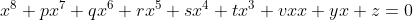
的方程的根的个数都等于其次数，所有根之和是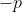
，每两个根之积的和是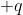
，每三个根之积的和是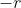
，每四个根之积的和是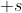
，等等。
这些笔记没有陈述任何定理。但是，其中隐含了一个定理，这个定理太令人震撼了，数学家们（实际上和《数学全集》的编辑一样）就把这个隐含的定理称作牛顿定理。
在给出这个定理之前，我需要解释对称多项式的概念。为了方便处理，下面考虑 3 个未知量，分别记为
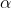
、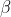
和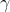
。下面是一些包含这 3 个未知量的对称多项式：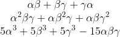
下面是 、 和 的非对称多项式：
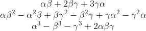
第一组多项式与第二组多项式之间的区别是什么？从表面上看，它们之间的差异是这样的：在第一组中，对 做的操作也作用在 和 上，对 做的操作也作用在 和 上，对 做的操作也作用在 和 上；这些操作就是加法、乘法和组合，它们都以同等的方式作用在所有未知量上；而第二组多项式就没有这些性质。
我在这里已经说得很清楚了，不过我们还可以用更精确的数学语言来描述对称多项式：如果以任意方式置换 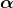 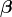 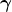
实际上，有 5 种置换 、 和 的方式：
（注意：数学家可能会试图说服你一共有 6 种置换，第六种置换是“恒等置换”，即什么都不动的置换。我将在第 7 章中采用这种观点。）
如果你对第一组多项式中的任一个多项式进行上述任意置换，最后得到的多项式都与原来的多项式一样，只是可能需要重新排列。比如，如果对
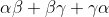
进行第五种置换，最终得到的是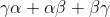
。它与原来的多项式一样，只是写法不同。从另一个角度来看，当多项式很大而且很难处理时，一个有用（尽管不总是正确）的办法是给 、 和 随机赋值，于是多项式可以算出一个数。如果你把这些值用所有可能的顺序赋给 、 和 后算出的数都一样，那么这个多项式就是对称的。如果我用 6 种可能的方式给 、 和 赋值 0.550 34、0.812 17 和 0.161 10，计算得出
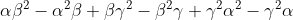
的 6 个对应值，其中 3 个值为 0.066 353 6，3 个值为 - 0.066 353 6。这就不是一个对称多项式：置换未知量将得出两个不同的值。（这件事本身很有意思，为什么是两个值？我稍后会详细说明。）所有这些想法可以推广到任意多个未知量和任何复杂的表达式上。下面是一个包含两个未知量的 11 次对称多项式：
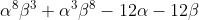
下面还有一个包含 11 个未知量的二次对称多项式：
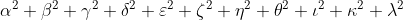
并非所有对称多项式都同等重要。有一类多项式被称为初等对称多项式。比如，包含三个未知量的初等对称多项式是
1 次：
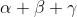
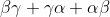
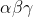
在我之前给出的对称多项式的 3 个例子中，第一个是初等对称多项式，其他两个都不是初等对称多项式。
对于任意多个未知量，初等对称多项式有
1 次：所有未知量相加（“所有单项”）。
2 次：所有可能的两个未知量之积相加（“所有对”）。
3 次：所有可能的三个未知量之积相加（“所有三元组”）。
以此类推。
如果考虑 元多项式 5，那么这个列表有 行，因为 个未知量不可能构造出
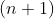
个未知量之积。5 元多项式即包含 个未知量的多项式，下同。——译者注
现在我可以陈述牛顿定理了。
牛顿定理
任意
因此，尽管我之前给出的另外两个对称多项式不是初等对称多项式，但是它们可以用刚才给出的三个初等对称多项式来表示。用初等对称多项式表示第二个对称多项式很容易：
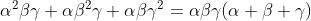
第三个对称多项式写起来有点儿麻烦，但是很容易验证：
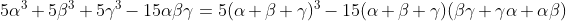
按照习惯，同时为了方便理解，我们研究未知量个数固定的多项式（上面是三元多项式），初等对称多项式通常用小写希腊字母表示，用下标表明次数。对于上面的情况，三元一次、三元二次和三元三次初等对称多项式分别记为
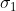
、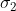
和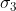
，所以第三个对称多项式可以写成：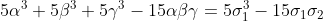
这就是牛顿定理：包含任意多个未知量的任意对称多项式都可以用初等对称多项式来表示。
※※※
这些与解方程有什么关系呢？回顾一下第 5 章中韦达写下的那些 、 和 的多项式。它们都是初等对称多项式！对于一般五次方程  ，如果它的解是 、、、
，如果它的解是 、、、
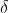
和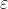
，那么有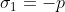
，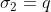
+，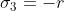
，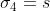
，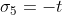
，其中这些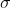
是包含 5 个未知量的初等对称多项式，这些多项式已经在第 5 章中写出来了。对于 的任意次一般方程也是如此。
的任意次一般方程也是如此。
正如我之前提到的，牛顿的这些笔记让我们知道了牛顿定理，它们是牛顿在其数学生涯早期（1665 年或 1666 年）写下的。当时他 21 岁，刚刚获得学士学位。由于瘟疫暴发，剑桥大学被迫停课，牛顿不得不回到乡下他母亲的家中。两年后，学校复课，为了获得奖学金和硕士学位，牛顿回到了学校。在乡下的那两年时间里，牛顿提出了奠定他后来在数学和科学上的发现的所有基本想法。人们常说，数学家在 30 岁之后就做不出任何原创性的工作了。这种说法难免有些苛刻，但是，人们的确可以透过一名数学家的早期工作发现其思维方式和他最感兴趣的主题。
实际上，在做这些笔记的时候，牛顿心里有一个特殊的问题，这个问题是确定两个三次方程何时有一个公共解。然而，以下研究对方程理论的进一步发展和所有源于它的全新代数领域都至关重要：
（1）一般的对称多项式；
（2）方程的系数与这个方程的解表示的对称多项式之间的关系。
17 世纪末，在解决了三次方程和四次方程问题的 120 年后，诸如对称、方程的系数、解的多项式等都是解决多项式方程理论中一个最著名的问题的关键，这个问题就是寻找一般五次方程的代数解。
※※※
总的来说，与 17 世纪和 19 世纪相比，18 世纪是代数发展比较缓慢的时期。牛顿和莱布尼茨在 17 世纪六七十年代发明的微积分开辟了大量新的数学领域，但不包括本书中我所指的代数，而是如今被我们称为“分析”的领域——研究极限、无穷序列、级数、函数、微分和积分等，分析在当时是一个具有魅力的崭新领域，数学家们投入了极大的热情。
还有一门更普遍的数学分支开始觉醒。这就是韦达和笛卡儿为研究代数发展起来的现代字母符号体系，依靠“放飞想象力”使数学研究更容易。另外，对复数的进一步接纳也拓宽了数学的充满想象力的边界。棣莫弗定理可以被视为 18 世纪初期纯数学的代表，这个定理的完整形式最早出现于 1722 年，即
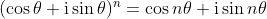
这个定理在三角学和分析学之间架起了一座桥梁，使得复数对分析学是不可或缺的。
这里讲的只是纯数学。随着科学的崛起、第一次工业革命的兴起以及宗教战争之后欧洲国家体制的逐步确立，数学家也越来越受到君主和军队的青睐。比如，欧拉为腓特烈二世的无忧宫设计了管道系统，傅里叶是拿破仑在远征埃及时的科学顾问。
18 世纪中叶，达朗贝尔（1717—1783）在微分方程领域所做的开创性工作是非常具有代表性的，拉普拉斯（1749—1827）方程
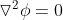
描述了一个量（密度、温度或电势）在某个平面区域或空间范围上光滑分布的众多物理系统，这可以被视为 18 世纪末期应用数学的代表。从某种程度上说，代数学是所有这些迷人的进展的旁观者。一般三次方程和四次方程已经被解决，但是还没有人知道在这个方向上如何进一步发展。韦达、牛顿和其他一两位最具想象力的数学家已经开始注意到多项式方程的解的奇妙对称性，但是他们还不知道如何从这些观察中获得有益的数学结论。
但是，数学家们在整个 18 世纪还在努力解决另一个问题，所以我应该在这里讨论一下这个问题。这个问题就是寻找所谓的代数基本定理的证明，我之所以使用“所谓”一词，是因为人们总是这样称呼这个定理，但是“基本定理”这个名称所代表的地位还是有争议的。有些数学家甚至会用伏尔泰嘲讽神圣罗马帝国的口吻说，代数基本定理既不基本，也不是定理，也不属于代数的范畴。我希望我可以马上澄清这一切。
代数基本定理的陈述很简单，如果用多项式方程粗略地描述就是每一个方程都有一个解。更精确的陈述如下。
代数基本定理
设
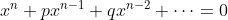
是关于未知量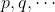
都是复数，
在这里，通常的实数被看成复数的特殊情况，即实数  被当作复数
被当作复数
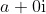
。所以，我在前文中列出的所有实系数方程都属于代数基本定理讨论的范围。每一个这样的方程都有一个解，当然，这个解可能是复数，如在方程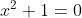
中，复数 i 满足这个方程（而且复数 - i 也满足这个方程）。代数基本定理最早是在笛卡儿的《几何学》（1637 年）中出现的，当时笛卡儿是以一种假设的形式陈述的，因为他不习惯于复数。所有 18 世纪的伟大数学家都尝试证明这一定理。1702 年，莱布尼茨认为他证否了这个定理，但是他的论证中有一处错误，这处错误在 40 年后被欧拉指出。1799 年，伟大的高斯把代数基本定理作为他博士论文的主题。然而，直到 1816 年才出现一个完全无懈可击的证明，这也是高斯给出的。
为了澄清代数基本定理的数学地位，我们需要仔细研究一个证明。这个证明并不难，只要熟悉复平面（图 NP-4）即可，这个证明可以在任何一本好的高等代数教材 6 中找到。下面仅仅是证明梗概。
6我特别推荐迈克尔·阿廷于 1991 年出版的教材《代数》（第 527~530 页），此书的讲解清晰明了。
※※※
复数同实数的情况一样，方程中的高次幂可以很轻松地“盖过”低次幂，我曾在“数学基础知识：三次方程和四次方程”中介绍过这一点。立方增大的速度比平方快，四次方比立方更快，等等。（注意：对于复数的情况，“大”的意思是“远离原点”或等价于“有较大的模”。）因此，对于较大的 ，定理中的多项式方程看起来更接近
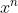
，而其他项只起到微调的作用。另外，如果 是 0，那么除去最后一项“常数项”之外，这个多项式中的每一项都等于 0。因此，对于较小的 ，这个多项式更接近它的常数项（例如在
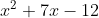
中，常数项是 -12）。如果 的值光滑而均匀地变化，那么  、
、 、
、
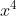
以及所有更高次幂也都光滑而均匀地变化，只是变化的速度不同。它们不会突然从一个值“跳”到另一个值。有了这三个事实之后，考虑所有给定较大模
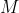
的复数。如果在复平面上标出它们，这些数会形成一个以 为半径的圆。这个多项式的对应取值近似形成一个大得多的半径为 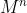
的圆（如果一个复数的模为 ，那么它的平方的模为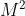
，等等，这很容易证明）。这是因为 盖过了这个多项式中的所有更低次幂。逐渐光滑地将 缩小到 0，模为 的所有复数形成的圆也收缩到原点。多项式的相应取值也缩小，就像一根拉紧的绳圈，从一个较大的以原点为圆心的近似圆，收缩到这个多项式常数项的那个复数。在这个收缩过程中，这根拉紧的多项式绳圈一定在某刻跨过原点。否则这些点怎么会收缩到那个复数呢？
这样就证明了这个定理！那个拉紧的绳圈上的点对应于多项式在某个复数 处的值。如果这个绳圈跨过原点，那么这个多项式在某个 处取值为 0。证毕。（你可能需要花一点时间考虑这个多项式的常数项等于 0 的情形。）
※※※
从代数的角度看，不如意的事情在于这个证明取决于连续性。我要说的是，当 逐渐缓慢地变化时，这个多项式的对应取值也在逐渐缓慢地变化。这是完全正确的，但仅仅是因为复数系的性质，在复数系中，你可以不加跳跃地从一个数滑动到另一个数，跨过中间无数个稠密的数。
并非所有数系都如此合适。近世代数中有各种各样的数系，我们可以在所有这些数系中构造多项式。像复数系这样友好的数系并不多，代数基本定理并不能在所有这些数系中成立。
因此，从近世代数的观点来看，代数基本定理是关于复数系的一个性质的描述，用现代术语说，这个性质被称为代数闭。复数系是代数闭的，也就是说，任何一个系数在该数系中的多项式方程在该数系中都有一个解。代数基本定理通常不是关于多项式、方程或数系的陈述，这就是为什么有些数学家会傲慢地告诉你它不是基本的。虽然它可能是一个定理，但是它不是一个真正的代数学中的定理，而是分析学中的一个定理，连续性概念属于分析学的范畴。7
7正如高斯以及后来的克罗内克所指出的，代数基本定理涉及一些深层次的哲学问题。如果你想全面地了解，请参阅哈罗德·爱德华兹的书《伽罗瓦理论》第 49~61 节。